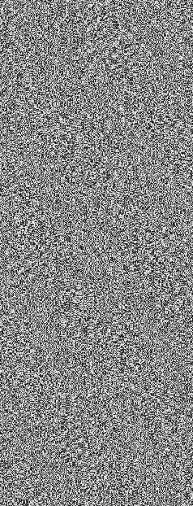

【ニーベルング】擁するヒーロー、およびその活動を取材したドキュメンタリー番組。
番組の放送日時は日曜の１０：００～１０：３０。
位置付けとしては対【ヘル・ドラド】を想定した特殊部隊であり、通常の事件は取り扱わない。
普段はイベントや慈善活動、ヒーローショーへの出演等、広報の分野において活動する。
|
 |
巽 幸太郎
ユグレンジャーの上司。通称「巽Ｐ」。 |
|
マネ子
ユグレンジャーや巽Ｐに対して敬語で話す女の子。 「マネ子って名前じゃないですぅーーーーっ！」 |